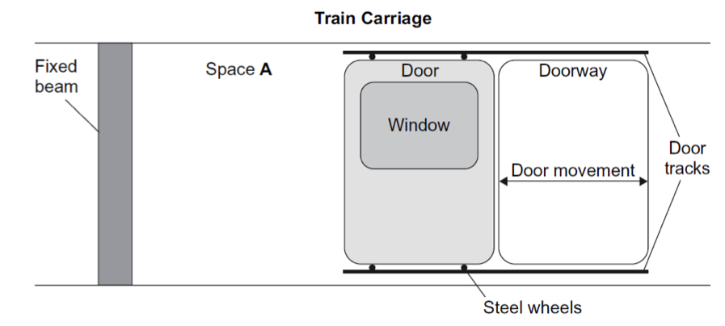
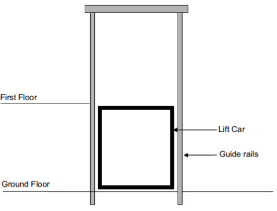
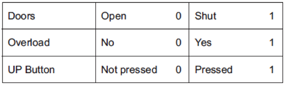
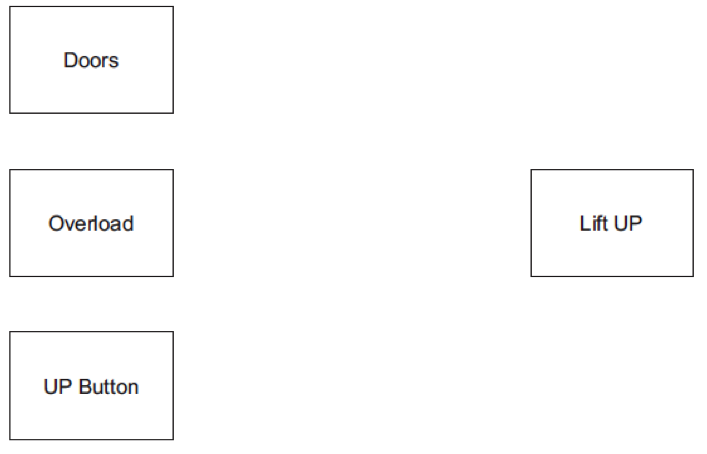
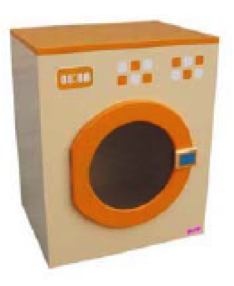
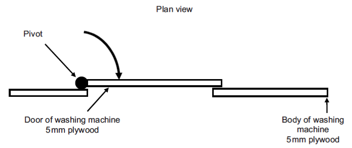
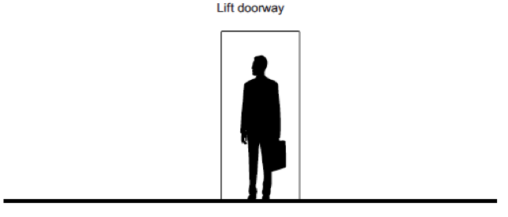
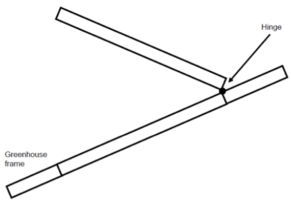
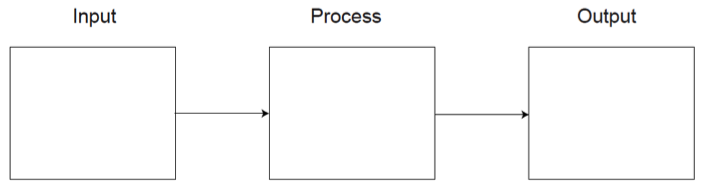

System Design
Table of Contents

1 Introduction
- The single most important skill of an engineer is to be able to design solutions to new problems, applying their knowledge of electronics, mechanisms and programming to tackle the task at hand. A large number of the exam questions will ask you to design solutions to real-life scenarios, by considering inputs, processes and outputs as well as mechanisms and suitable materials.
- You will also likely be asked to perform calculations – the formulae for these are all included at the start of the exam paper.
- Questions such as these are difficult to teach. They ask you to look at what you know about electronic components and mechanisms, and to use your creativity to design solutions to unseen problems. To get an idea of how to solve problems like these, there are a set of model solutions here, which show some possible solutions.
2 Recap
Past Paper Questions
- June 2007, Q1. This question is about an automated train carriage door. The door opens and closes using wheels on tracks at the top and bottom of the doorway.
- (a) (i) Give one reason why the train door is made from aluminium. (1 mark)
- (ii) Give one reason why the door wheels are made from steel. (1 mark)
- (iii) Suggest a suitable material for the door track. (1 mark)
- (b) The simplified diagram below shows a sliding train carriage door. It is in the open position. In Space A on the simplified diagram, design a suitable system that will open and close the carriage door. Draw and label all components and mountings.

- Your design must show:
- a suitable system to close and open the door (3 marks)
- suitable mounting of the system to the fixed beam (1 mark)
- suitable mounting of the system to the door (1 mark)
- labelled components and mountings. (2 marks)
- (c) Describe how the system that you have drawn in Space A operates. (2 marks)
- (d) (i) Give two reasons for your choice of system. (2 marks)
- (ii) Name a specific component that could be used to sense that the door has hit an obstruction. (2 marks)
- (iii) Give two other Health and Safety issues that should be considered when designing the door system. (2 marks)
- (e) In use it was found that the door opened and closed too quickly. What could be added to your system to slow down the movement of the door? (2 marks)
- June 2007, Q5. This question is about design issues for railway systems.
- (a) (i) What advantage would an automatic door system on a train give the passengers? (1 mark)
- (ii) Give two reasons for your answer. (2 marks)
- (b) (i) What advantage would an automatic door system on a train give the train company? (1 mark)
- (ii) Give two reasons for your answer. (2 marks)
- (c) Suggest how passengers could escape from a train if the automatic door system fails. (3 marks)
- (d) State two maintenance requirements of an automatic train door system. (2 marks)
- (e) Give two reasons why electric trams are more environmentally friendly than most cars. (2 marks)
- (f) A local council wants to encourage car drivers to use trains or trams. Suggest two ways that they could do this. (2 marks)
- June 2007, Q6. This question is about a box-sorting system. An automated conveyor-belt system sorts boxes as they are unloaded from a train. Design a system to sort the boxes.
- Boxes that are higher than 400 mm should carry on along conveyor belt 1.
- Boxes that are 400 mm or lower should be sent along conveyor belt 2.
- Add your design to the existing drawing opposite. Marks will be awarded as follows:
- the method of sensing the height of a box (5 marks)
- the method of sending the lower boxes along conveyor belt 2 (5 marks)
- notes and sketches to explain your designs on the drawing below. (2 marks)
- June 2010, Q1. This question is about the design of a lift model to demonstrate control systems to students. A company has asked you to design a portable lift model for schools. The lift model will have a ground floor and a first floor.
- (a) The first stage is to produce a Design Specification. Describe three issues which you need to consider before you begin to design the lift model.
- For each issue give:
- a consideration (3x 1 mark)
- an explanation (3x 1 mark)
- a detailed statement for the Design Specification. (3x 2 marks)
- An example has been given to help you.
- Consideration: The weight of the lift car.
- Explanation: If it is too heavy it will be difficult to lift.
- Statement: The lift car must weigh less than 100g.
- b. Study the simplified view of a lift model shown here.
- Sketch and label a design idea to show how the lift car could be raised and lowered by a powered control system.
- Sketch larger details of any parts at the side of the main diagram.

- Marks will be awarded for:
- a recognisable system (1 mark)
- moving the lift between the ground and first floor (2 marks)
- sensing when the lift is at the ground and first floor (2 marks)
- powering the system (1 mark)
- clear sketching and all components labelled. (2 marks)
- June 2010, Q2. You are advised to spend about 10 minutes on this question. This question is about the design of a system to control the lift. The lift should only go up when:
- the doors are shut
- the lift is not over loaded (i.e. there is not too much weight in the lift)
- the user presses the UP button.

- Using only one and two-input logic gates, design a logic circuit that will operate the lift correctly. Marks will be awarded for: -
- logic gates symbols (3 marks)
- inputs to gates (5 marks)
- output to lift (1 mark)
- clarity of drawing. (1 mark)

- This question is about a washing machine control system model. The washing machine model is made from plywood and has:
- a door that opens and shuts
- a button to start the simulated wash
- a door lock to stop the door opening
- a geared motor to turn the wash drum
- an LED that lights to show that the drum is turning.

- 4 (a) (iv) On the diagram below, show how the door lock component you have named is mounted to the body of the washing machine. Show how the component locks the door. Marks will be awarded for:
- a component mounted correctly (1 mark)
- a component able to lock the door (1 mark)
- a good quality labelled sketch of the component. (2 marks)

- June 2011, Q6. You should spend about 10 minutes on this question. This question is about the design of a system to sense a person standing in a lift doorway. The system should be activated without the person touching it.
- 6 (a) Add a suitable system to the drawing below. Your system must show:
- a recognizable system (1 mark)
- the ability to detect a person without being touched (1 mark)
- components well drawn and labelled. (1 mark)

- 6 (b) Describe the full operation of the system opposite and explain why it would be used. You should:
- explain how the system senses a person
- refer to the components that you have drawn
- explain how it is used to improve safety.
- You will be tested for quality of written communication in this part of the question. (8 marks)
- June 2012, Q2. You are advised to spend about 15 minutes on this question. This question is about designing the opening and closing system for an automatic greenhouse vent. You have been asked to design an automatic vent for a greenhouse which is battery powered and must be able to open and close. Using notes and sketches, add to the diagram of the greenhouse vent below a design for the vent mechanism which shows the following features:
- a system that can fully open the vent (2 marks)
- a method of sensing that the vent is fully open (2 marks)
- a system that can fully close the vent (2 marks)
- a method of sensing that the vent is fully closed (2 marks)
- a secure method of attachment to the greenhouse frame (2 marks)
- a suitable power source for the system. (3 marks)
- Name the system that you have chosen to use:
- Greenhouse vent (shown in open position):

- June 2013, Q1. You are advised to spend about 35 minutes on this question. This question is about designing an automatic system for bird photography. Many bird watchers would like to have a photograph of birds visiting their bird feeder. A manufacturing company have asked you to design an automatic system to operate a camera when a bird is present.
- 1 (a) The first stage is to produce a Design Specification. For each of the following specification points, give an example of an issue you will need to consider. You should explain your answer. An example response has been given to help you.
- Functional specification point - The system must be waterproof to prevent rain damage.
- Safety specification point: (2 marks)
- Power supply specification point: (2 marks)
- Aesthetic specification point: (2 marks)
- 1 (b) Using notes and sketches, design a system in the following boxes that meets each of the relevant criteria.
- 1 (b) (i) The system can sense that a bird is present. (3 marks)
- 1 (b) (ii) The system can sense that it is not completely dark. (3 marks)
- 1 (b) (iii) The system can operate the camera. (3 marks)
- 1 (b) (iv) The system can let the bird watcher know that the camera has taken a picture. (3 marks)
- 1 (b) (v) The system is suitable for use outside in the rain. (3 marks)
- 1 (c) Give each stage of operation in the automatic system to operate a camera when a bird is present. Complete the system block diagram below. (3 marks)

- 1 (d) State two suitable output devices to let the bird watcher know that the camera has taken a picture. Give a suitable design advantage for each device.
- Output device 1
- Advantage of output 1
- Output device 2
- Advantage of output 2 (6 marks)
- 1 (e) The case for your system will be manufactured in a batch of 20,000. State a suitable material and process for the manufacture of 20,000 cases for the system you have designed.
- Give a reason for your choice.
- Material
- Process
- Reason (4 marks)